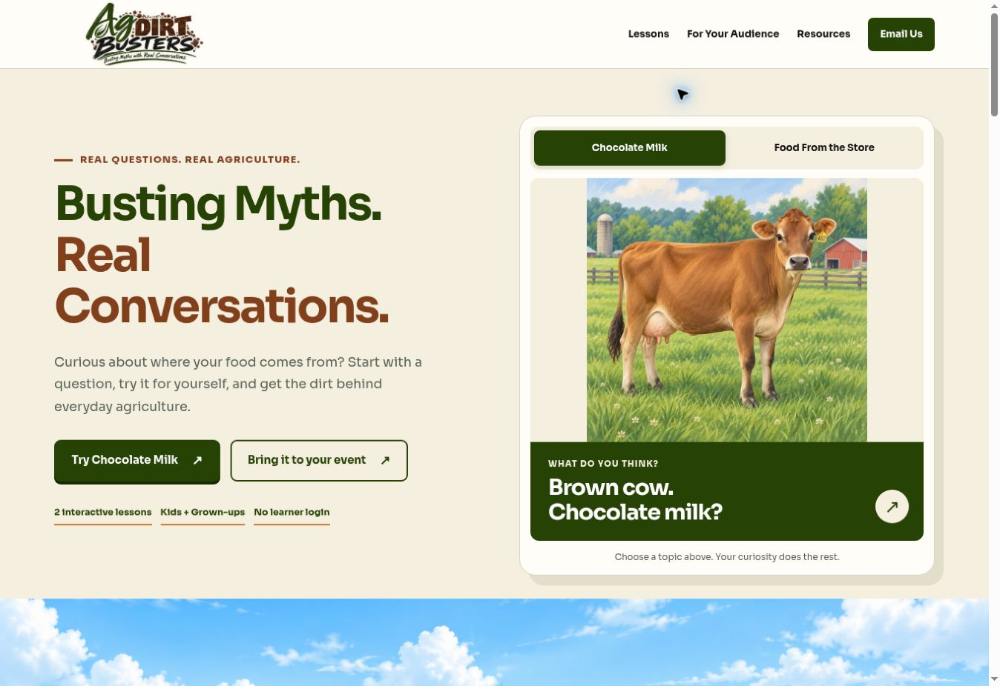

Start with a belief.
Learners respond to the opening question before reviewing the explanation.
Ag Dirt Busters · An owned learning product
A growing collection of interactive agriculture lessons, connected through a public website and private reporting. Sagebrush Design shaped the concept, learning strategy, visual experience, and supporting systems.
The design problem
Agriculture misconceptions need more than a list of facts. The experience invites learners to make a prediction, work with an idea, and revisit their thinking with evidence. Separate kid and grown-up experiences support different audiences.
Learners respond to the opening question before reviewing the explanation.
Illustrated interactions turn an everyday question into something learners can investigate.
Learners revisit the question, explore supporting sources, and can share feedback.
Live learning examples
Chocolate Milk and Food From the Store are the current published lessons. Explore the actual learning experiences below.
Start with the brown-cow question, compare cows, and explore the explanation behind chocolate milk.
Look beyond the grocery store and follow familiar pizza ingredients back to their agricultural origins.
Public discovery + inquiries
The public website connects visitors to the lessons and supporting resources, with a shared inquiry form for people interested in using Ag Dirt Busters with their audience.

Private reporting · Actual interface samples
Select a view to inspect the dashboard. These are screenshots supplied by the product owner, not a live connection to private reporting.
Session counts, answer distributions, completion, and engagement in one view.
Event reporting controls and activity breakdowns. This screenshot shows the state before a specific event is selected.
Response counts and learner views of usefulness, explanation confidence, and recommendation.
Read-only submitted questions. The visible entries are test data demonstrating the interface.
Evidence and continued development
Two published lessons, a public website, and a private dashboard covering Overview, Event Report, Feedback, and Myth Submissions.
Ag Dirt Busters will continue to grow beyond the two current lessons. This portfolio shows the current product and its supporting reporting experience.